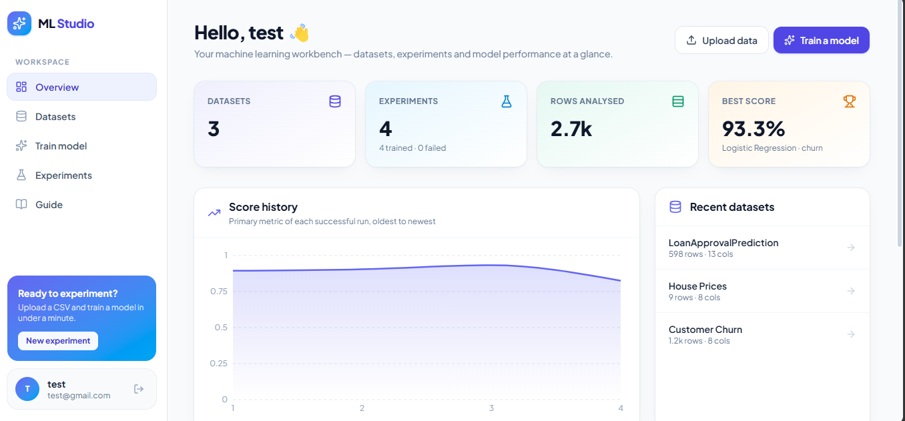
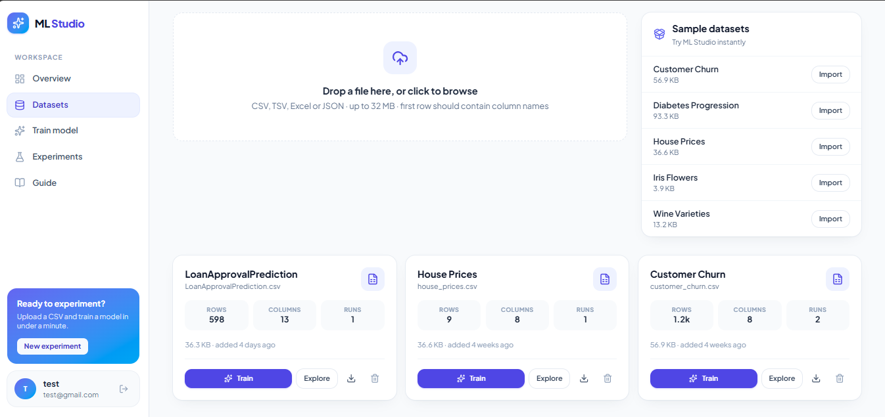
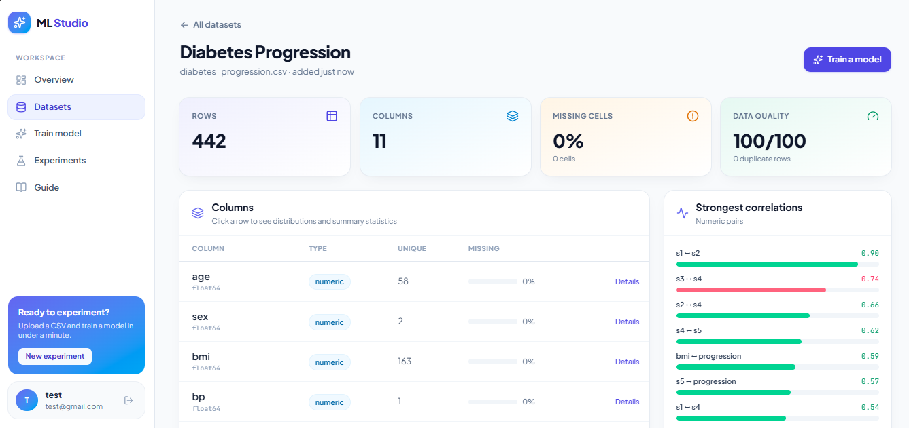
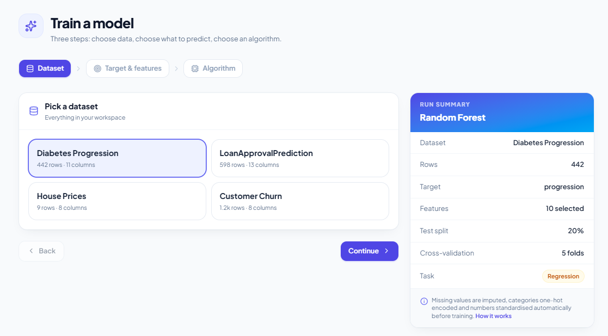
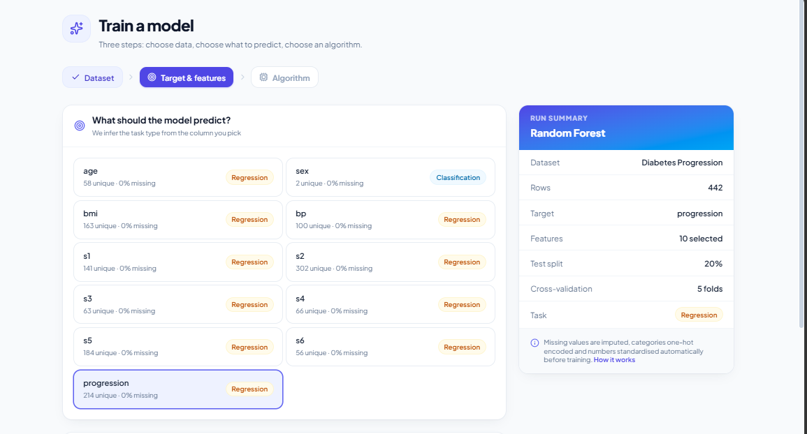
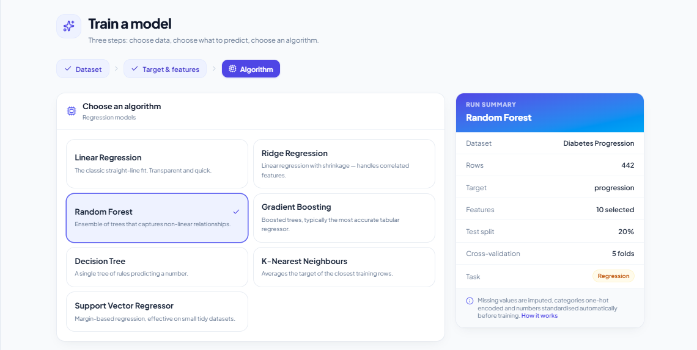
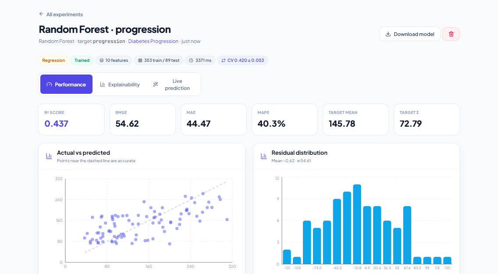
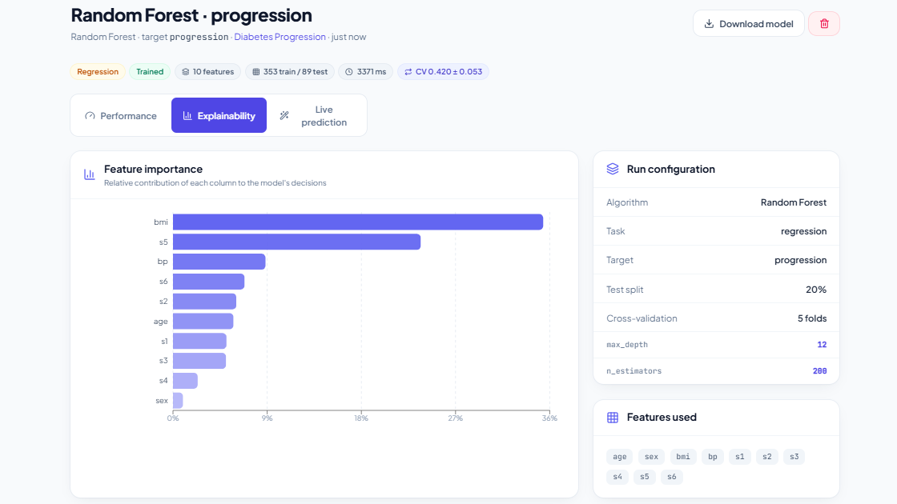
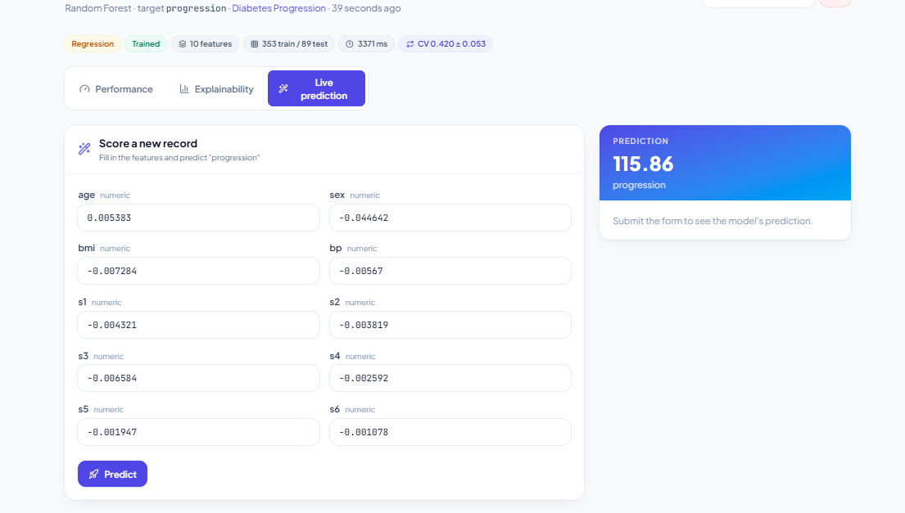
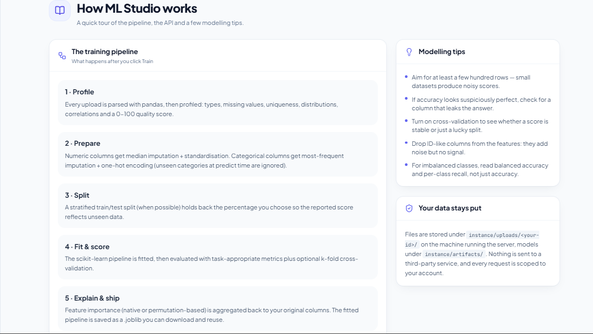

ML Workspace
An end-to-end machine learning platform engineered to streamline dataset preprocessing, automated feature engineering, model training, evaluation, and predictive analytics.
Project Overview
The ML Workspace is an end-to-end data science application designed to simplify and accelerate machine learning experimentations.
Instead of manually writing boilerplate code for preprocessing and model evaluation across separate scripts, this workspace provides a unified environment where users can load datasets, configure parameters, train algorithms, and analyze performance metrics efficiently.
The project focuses on building an intuitive machine learning pipeline that bridges data ingestion with deployment-ready predictions, making model development seamless and scalable.
Objective
The main objective of the ML Workspace is to automate and standardize the core phases of the machine learning lifecycle.
The system empowers developers and data analysts to quickly ingest raw structured data, apply preprocessing techniques, select optimized feature subsets, and evaluate model benchmarks, demonstrating how production-grade ML pipelines can be structured.
Key Features
- Automated data cleaning and missing value handling
- Feature selection, scaling, and categorical encoding
- Multi-model algorithm training and hyperparameter tuning
- Interactive visual model evaluation and performance metrics
- Real-time prediction generation on unseen data
- Modular design built for cloud integration and batch processing
How It Works
The user uploads a dataset into the platform, which automatically performs exploratory statistical checks and flags data quality issues.
Once preprocessing options and feature selections are confirmed, the workspace trains designated machine learning models and computes key performance evaluation metrics (such as accuracy, precision, recall, RMSE, or R² score).
The final trained model is then serialized and exposed within the environment, ready to serve real-time predictions for new input payloads.
ML Pipeline & Model Optimization
Machine learning algorithms and data transformation modules are structured to maintain statistical integrity throughout data split stages, preventing data leakage between training and testing subsets.
By supporting flexible feature engineering and evaluation metrics, the workspace allows users to compare different model families and optimize hyperparameters for peak predictive performance.
Technologies Used
Project Workflow
Project Output
The following screenshots demonstrate the workspace interface, data processing pipeline, and evaluation dashboards.










Project Outcome
The project demonstrates the design and practical implementation of an automated machine learning workflow in data-driven environments.
It provides a robust foundation for building end-to-end MLOps solutions, including automated model retraining pipelines, RESTful prediction APIs, and cloud-hosted analytics suites.
Future Improvements
Future enhancements include integrating Automated Machine Learning (AutoML) capabilities, direct REST API deployment endpoints, real-time drift detection, support for unstructured image and text data pipelines, and scalable cloud compute integration.
← All Projects